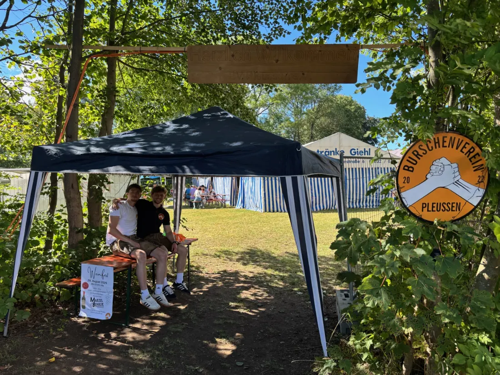
Weinfest
Unser Weinfest ist für alle offen. Wir bauen selbst auf, schenken selbst aus und feiern mit allen, die vorbeikommen.
Zum Weinfest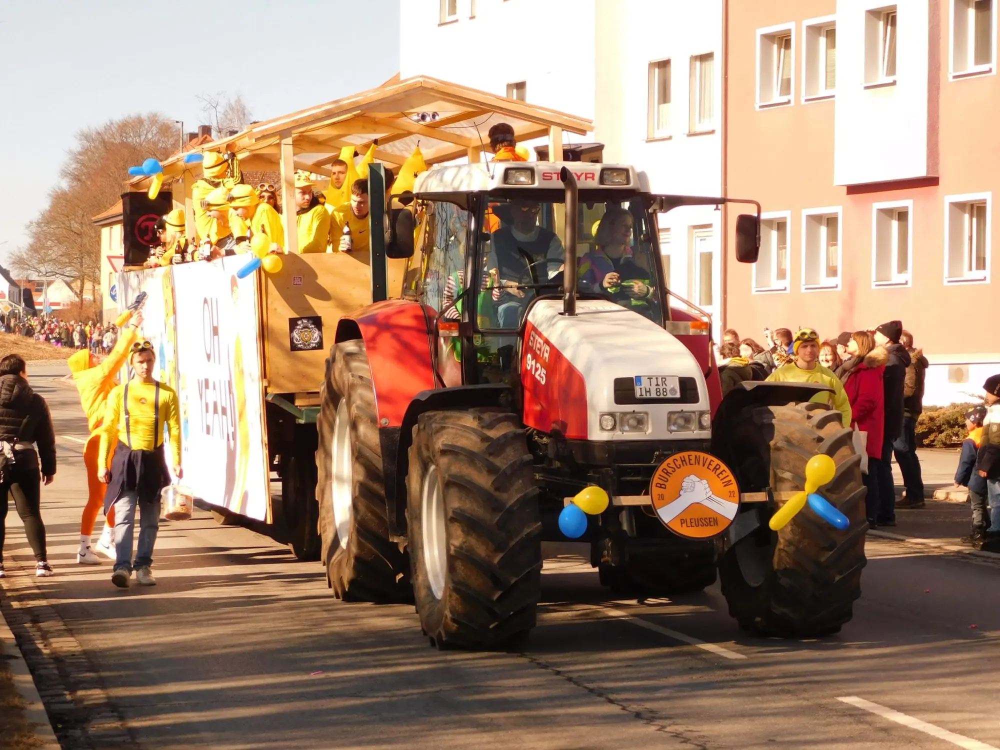
Pleußen · seit 2022
Wir pflegen die bayerische Tradition und stärken den Zusammenhalt unserer Dorfgemeinschaft.
Über uns
Unser Burschenverein Pleußen ist für uns über 75 starke Burschen ein wichtiger Ort des Zusammenhalts.
Wir haben uns zum Ziel gesetzt, das traditionelle Brauchtum in Pleußen und Umgebung zu fördern und zu bewahren. Dabei liegt uns nicht nur die Unterstützung anderer am Herzen, sondern auch das Schaffen unvergesslicher Erlebnisse für unsere Mitmenschen. Deshalb organisieren wir zum Beispiel regelmäßig Weinfeste und ähnliche Veranstaltungen, die für die Öffentlichkeit zugänglich sind und dazu beitragen, das Brauchtum zu fördern.
Wir sind stolz darauf, Teil dieser engagierten Gemeinschaft zu sein und uns für die Traditionen unserer Region einzusetzen. Gleichzeitig sehen wir uns als Teil einer größeren Gemeinschaft und möchten durch unsere Aktivitäten auch einen Beitrag für das gesellschaftliche Leben in Pleußen und Umgebung leisten.
Dabei sind wir immer offen für neue Ideen und Anregungen und freuen uns über jeden, der sich unserem Verein anschließen und mit uns gemeinsam Traditionen pflegen und erleben möchte. Wir laden daher alle herzlich ein, unsere Veranstaltungen zu besuchen und sich von der Freude und Begeisterung für unser Brauchtum anstecken zu lassen.
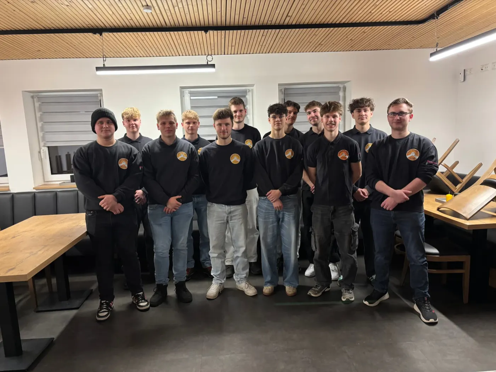
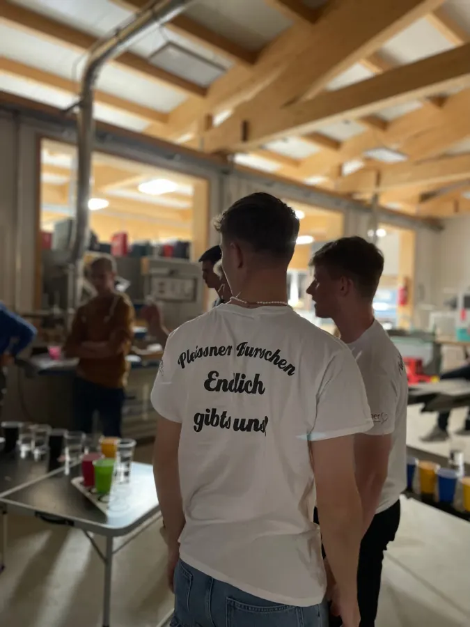
Was wir machen
Ein Überblick, wo ihr uns übers Jahr trefft.

Unser Weinfest ist für alle offen. Wir bauen selbst auf, schenken selbst aus und feiern mit allen, die vorbeikommen.
Zum Weinfest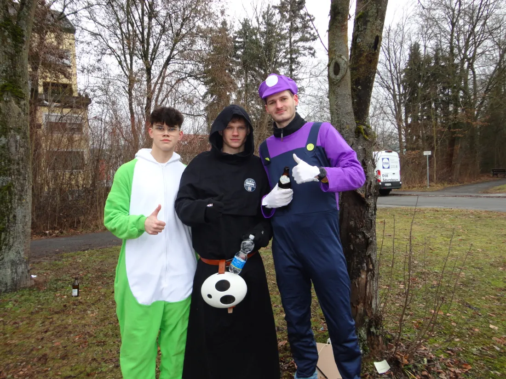
Zum Faschingszug fahren wir mit eigenem Wagen und gemeinsamen Kostümen.
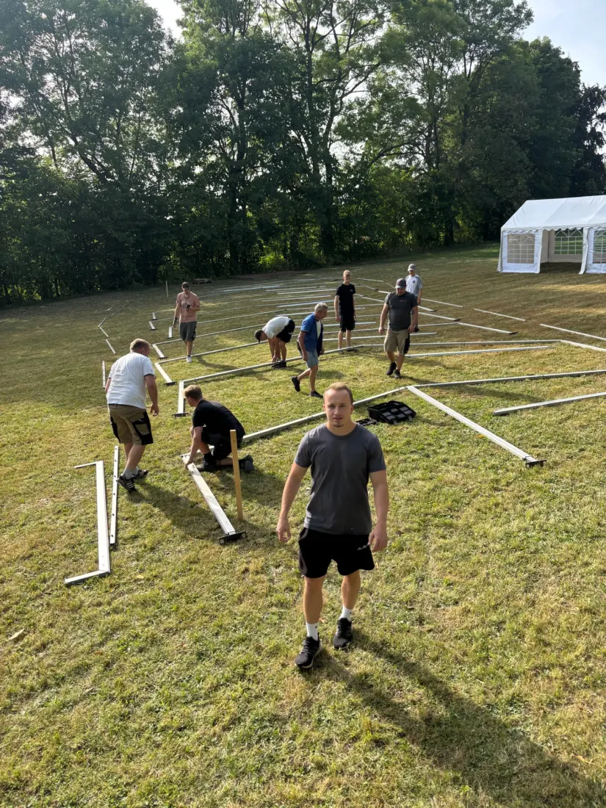
Vor jedem Fest heißt es: Zelt aufbauen, Bänke schleppen, schmücken. Das machen wir zusammen, und danach wird gemeinsam gefeiert.
23.–25. Juli 2027
2027 feiern wir unser 5-jähriges Bestehen und weihen unsere neue Vereinsfahne. Drei Tage Fest in Pleußen, und ihr seid eingeladen.
Aktuelles
Der Burschenverein Pleußen e. V. hielt am Freitag, den 6. Februar 2026, seine vierte Jahreshauptversammlung ab. Der 1. Vorsitzende Johannes Rögner begrüßte dazu 32 stimmberechtigte Mitglieder.
Weiterlesen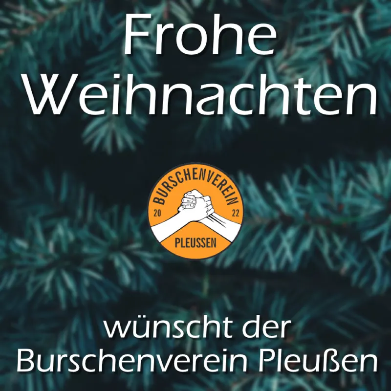
Morgen ist Heiligabend – Zeit, um auf das Jahr 2024 zurückzublicken und auch ein bisschen nach vorne zu schauen.
Weiterlesen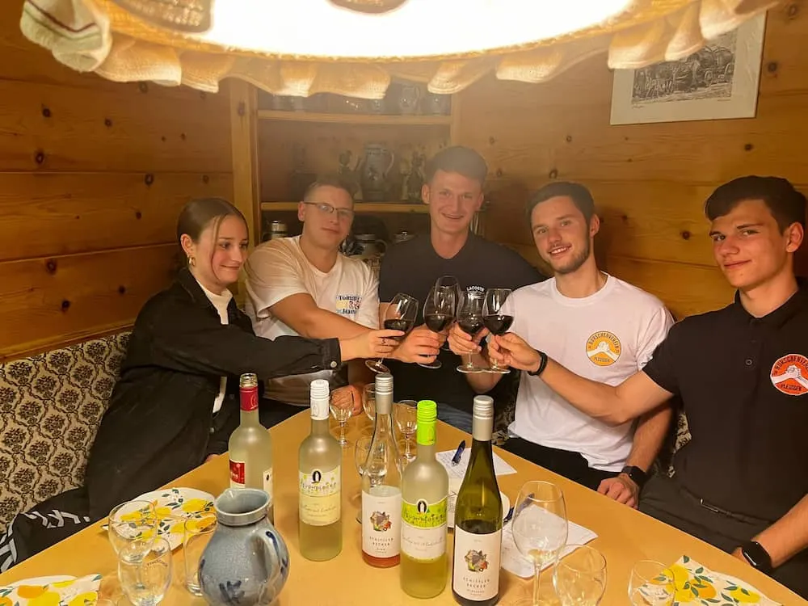
Vergangenen Donnerstag hatten wir als Burschenverein Pleussen eine wundervolle Weinprobe bei Weinhandel Achatz in Waldsassen.
WeiterlesenEindrücke
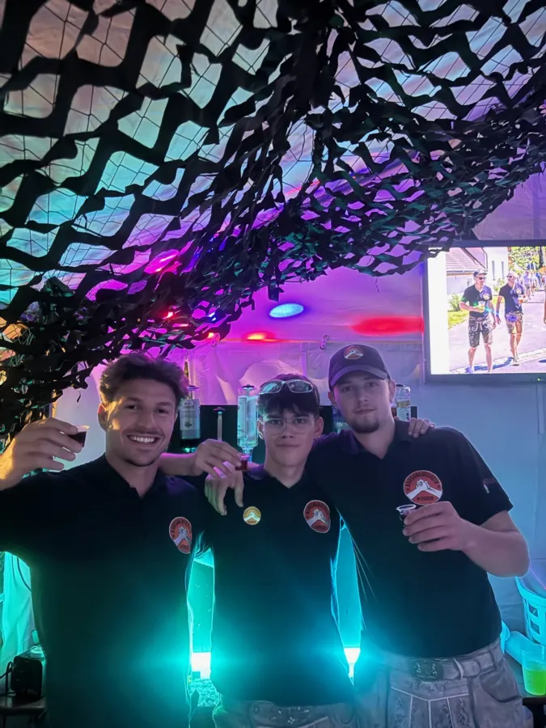
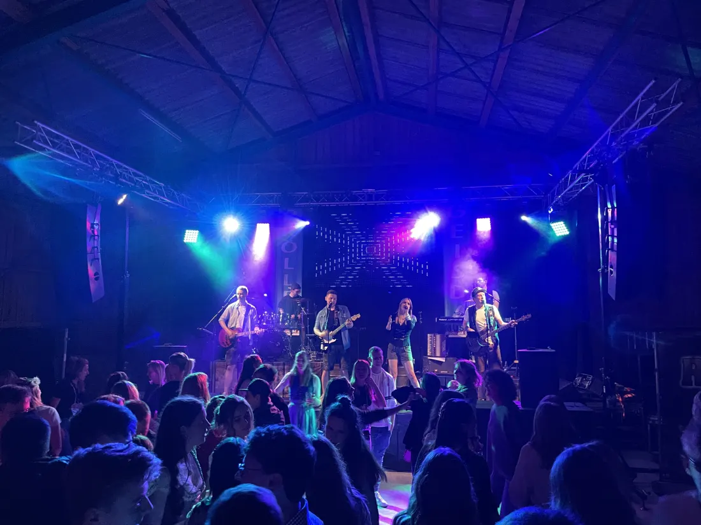
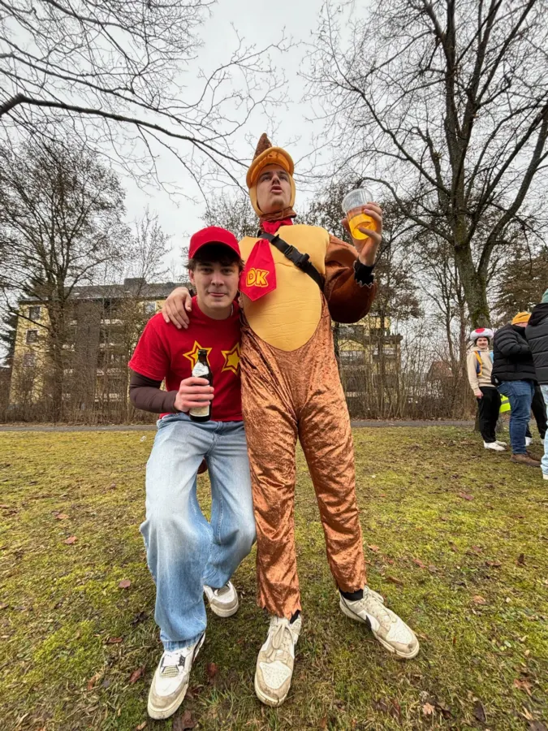
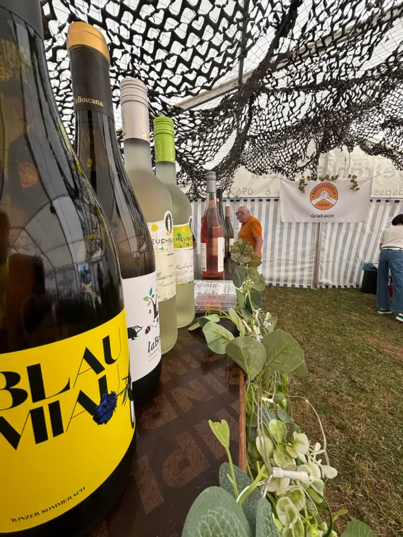
Interesse an Brauchtum und Geselligkeit? Wir freuen uns auf dich.